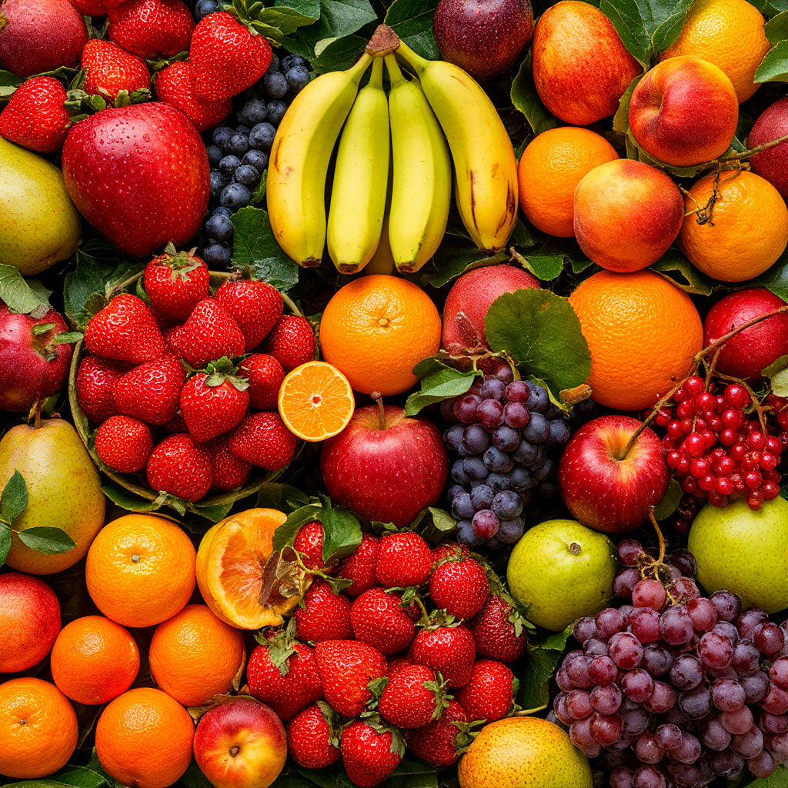

Лови момент — ешь сезонное!

Фрукты — важный источник витаминов и микроэлементов, необходимых организму круглый год. Однако разные виды плодов созревают в разное время, и употребление сезонных фруктов наиболее полезно и естественно.
Почему стоит есть сезонные фрукты?
- Больше витаминов и микроэлементов
- Экологичность и поддержка местных фермеров
- Доступная цена в период урожая
- Настоящий, насыщенный вкус